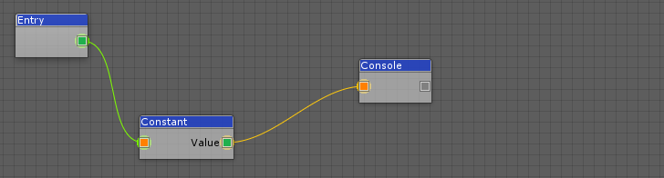
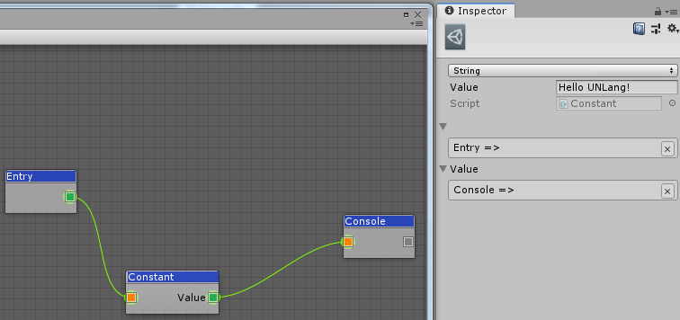

Let’s print
Hello UNLang!in Unity console window.
① Create “Hello UNLang!” Script
- Back to Unity editor, you will see
UNLang/IDE...menu.
- Open the
IDEwindow. - Right click in the
IDEwindow and you will see all operations in the context menu.
- Add
Entry,ConstantandConsolemodules, then connect them as following:
 - Select
Constantmodule and in the Inspector window, chooseStringtype and inputHello UNLang!.
 - Right click to save the script to local project, for example,
[UnityProject]/Assets/Resources/1.bytes.
② Run the Script
- Create a GameObject in the active scene.
- Attach an empty MonoBehaviour cs file.
Edit the empty MonoBehaviour cs file with the following code:
using UnityEngine;
using UNLang;
using UNode;
public class NewBehaviourScript : MonoBehaviour
{
// UNLang instance to execute the script.
private LangInstance instance = null;
void Start()
{
// Take over the loader since we put the script file
// under Resources folder.
NodeLoader.Load = file =>
{
// Remove "Resources" relative path and file extension.
file = file.Replace("/Resources/", "");
file = file.Substring(0, file.IndexOf("."));
return Resources.Load<TextAsset>(file).bytes;
};
// Create UNLang instance.
this.instance = new LangInstance();
// Load script file "1.bytes".
this.instance.Load("1.bytes");
// Start the script from "Entry" module.
this.instance.Run<Entry>();
}
void Update()
{
// Update UNLang instance.
this.instance?.Update();
}
}Congrats with
Hello UNLang!in Unity console window.